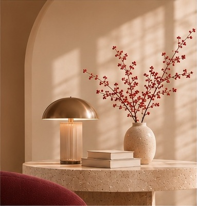

L’INTENTION LDPL
Une approche
humaine et sur mesure.
Chez LDPL, chaque projet est construit en étroite collaboration avec le client. Mon approche repose sur l’écoute, la compréhension des besoins et la création d’espaces uniques, esthétiques et fonctionnels, en accord avec votre mode de vie, vos usages et votre identité.
Des premières idées aux détails qui font la différence, chaque choix participe à une vision cohérente, durable et personnelle du lieu.
Échangeons sur votre projet